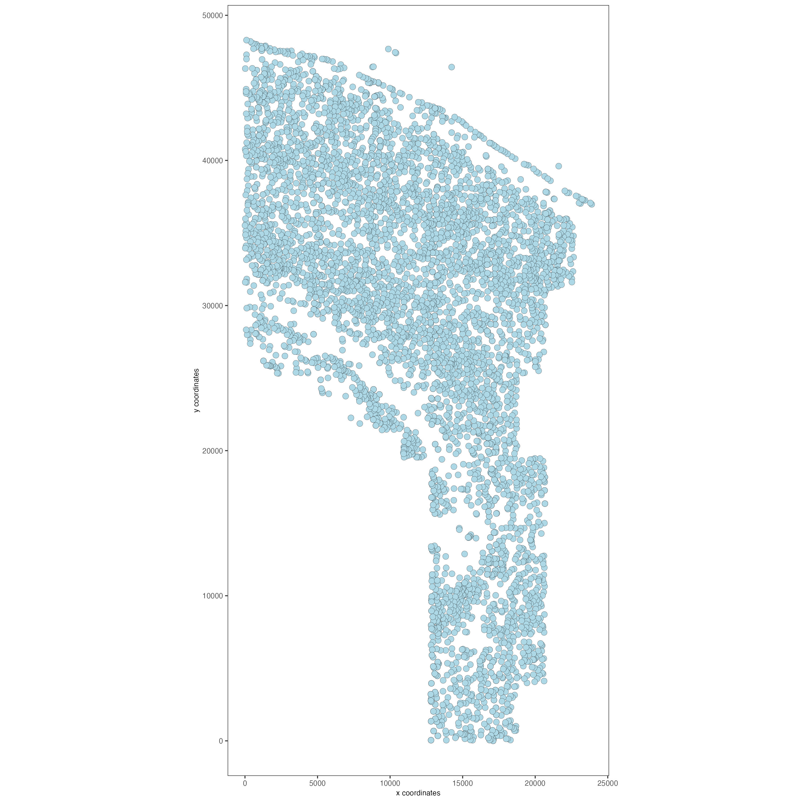
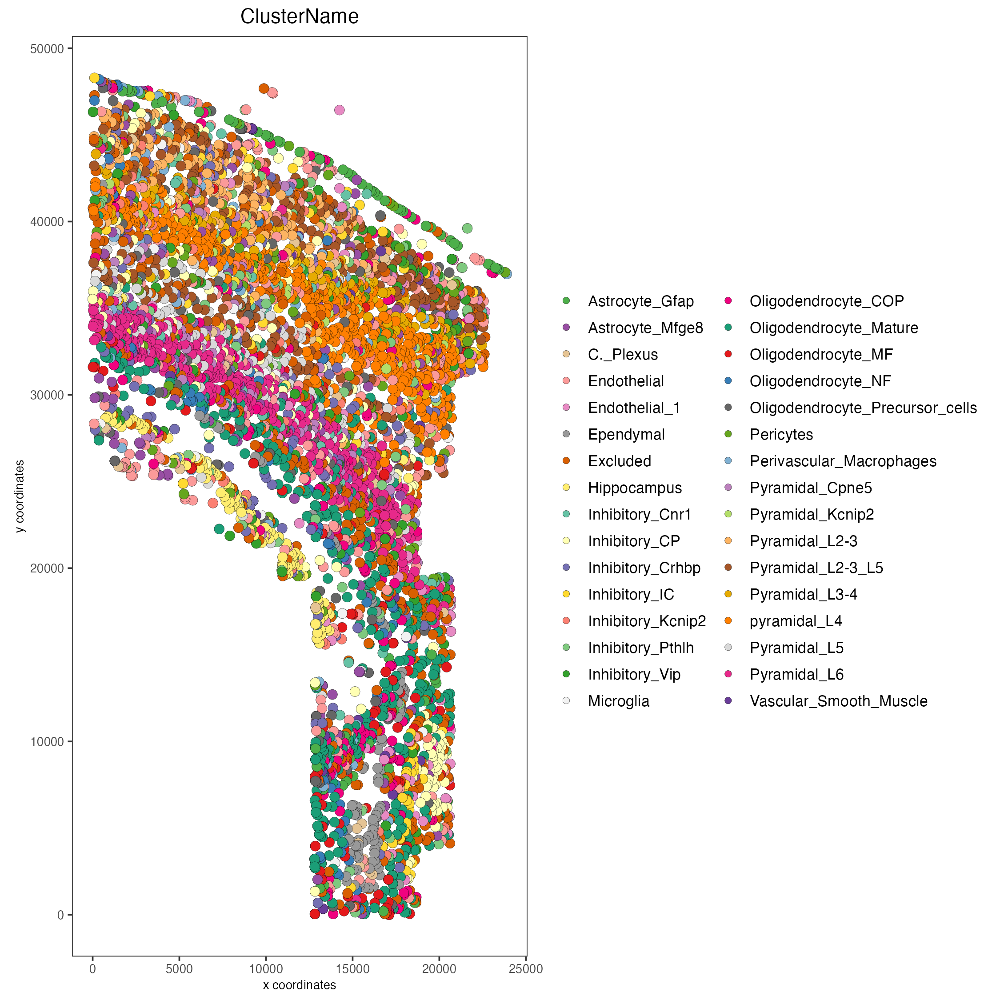

In this tutorial, the methodology and syntax to create a
giotto object is shown and osmFISH data is used throughout
the tutorial.
To download this data, please ensure that wget is installed locally.
library(Giotto)
library(GiottoData)
genv_exists = checkGiottoEnvironment()
if(!genv_exists){
# The following command need only be run once to install the Giotto environment.
installGiottoEnvironment()
}
# Specify path from which data may be retrieved/stored
data_directory = paste0(getwd(),'/gobject_data/')
# alternatively, "/path/to/where/the/data/lives/"
# Specify path to which results may be saved
results_directory = paste0(getwd(),'/gobject_results/')
# alternatively, "/path/to/store/the/results/"
# Download osmFISH dataset to data_directory
getSpatialDataset(dataset = 'osmfish_SS_cortex',
directory = data_directory,
method = 'wget')Here, creating a giotto object with the minimum
requirements is shown in two examples. Data formatting guidelines are
shown below this code block.
# Example 1.
# Create a Giotto object using data directly from file paths
osm_exprs = paste0(data_directory, "osmFISH_prep_expression.txt")
osm_locs = paste0(data_directory, "osmFISH_prep_cell_coordinates.txt")
minimum_gobject1 <- createGiottoObject(expression = osm_exprs,
spatial_locs = osm_locs)
# Example 2.
# Create a Giotto object using objects already loaded into workspace
expression_matrix = readExprMatrix(path = osm_exprs) # fast method to read expression matrix
cell_locations = data.table::fread(file = osm_locs)
minimum_gobject2 <- createGiottoObject(expression = expression_matrix,
spatial_locs = cell_locations)Expression file formatting
Expression count matrices accepted by Giotto should have columns correlating to individual cells (cell IDs) and rows to individual features (feature IDs).
data.table objects and text-based files ie: (.csv, .tsv, .txt) to be read in should have column 1 be feature IDs.
matrix and DelayedMatrix objects should have feature IDs already incorporated as the rownames.
Locations file formatting
Numerical columns will be interpreted in order of x, y, and (optionally) z coordinate. The first non-numerical column will be taken as cell IDs
*Note: multiple expression files during can be given at once during Giotto object creation by using a named list.
# Arbitrary modifications
scaled_matrix = expression_matrix * 1.2
custom_matrix = expression_matrix * 0.5
# Provide multiple expression matrices at once to the Giotto Object
# If these matrices are stored in files rather than in the workspace,
# file paths may be provided instead of variables
multi_expr_gobject <- createGiottoObject(expression = list(raw = expression_matrix,
scaled = scaled_matrix,
custom = custom_matrix),
spatial_locs = cell_locations)By providing values to other createGiottoObject()
parameters, it is possible to add:
Providing giottoInstructions allows the specification
of:
createGiottoInstruction() is used to create the
instructions that are provided to createGiottoObject(). The
instructions() function can then be used to view, set, or
modify one or more of these instructions after they have been added to a
giotto object.
Here is an example of a more customized Giotto object.
# Specify data with file paths
osm_exprs = paste0(data_directory, "osmFISH_prep_expression.txt")
osm_locs = paste0(data_directory, "osmFISH_prep_cell_coordinates.txt")
meta_path = paste0(data_directory, "osmFISH_prep_cell_metadata.txt")
# Create instructions
# Optional: Specify a path to a Python executable within a conda or miniconda
# environment. If set to NULL (default), the Python executable within the previously
# installed Giotto environment will be used.
my_python_path = NULL # alternatively, "/local/python/path/python" if desired.
instrs = createGiottoInstructions(python_path = my_python_path,
save_dir = results_directory,
plot_format = 'png',
dpi = 200,
height = 9,
width = 9)
# Create Giotto object
custom_gobject <- createGiottoObject(expression = osm_exprs,
spatial_locs = osm_locs,
instructions = instrs)
# Add field annotations as cell metadata
metadata = data.table::fread(file = meta_path)
custom_gobject <- addCellMetadata(custom_gobject,
new_metadata = metadata,
by_column = T,
column_cell_ID = 'CellID')
# Show the Giotto instructions associated with the Giotto object
showGiottoInstructions(custom_gobject)Note that although parameters show_plot,
return_plot, and save_plot were not specified
within the call to createGiottoInstructions(), default
values were provided to these instruction parameters. All instruction
parameters have default values, such that
createGiottoInstructions() may be called with some or no
arguments yet all instruction parameters will have a value after its
execution.
Alternatively, a named list may also be provided to the
instructions argument of createGiottoObject().
However, ensure that all arguments to
createGiottoInstructions()
are defined when providing instructions as a named list, since default values are only applied to instructions when made with createGiottoInstructions() \*Note thatpython_path`
must be specified when providing instructions as a named list, and may
not be provided as NULL.
The giottoInstructions may be changed, or completely
replaced:
# Change a specific previously set parameter, e.g. change dpi = 200 to dpi = 300
custom_gobject <- changeGiottoInstructions(custom_gobject,
params = 'dpi',
new_values = 300)
# Observe that the instructions have changed
instructions(custom_gobject, 'dpi')
# Create new instructions using a named list
sub_results_directory = paste0(results_directory, 'specific_results/')
my_python_path = instructions(custom_gobject, 'python_path')
new_instrs = list(python_path = my_python_path,
show_plot = TRUE,
return_plot = FALSE,
save_plot = TRUE,
save_dir = sub_results_directory,
plot_format = 'jpg',
dpi = 250,
units = 'in',
height = 12,
width = 12,
is_docker = FALSE)
# Change all instructions
instructions(custom_gobject) = new_instrs
# Observe that the instructions have changed
showGiottoInstructions(custom_gobject)Many of Giotto’s functions have spat_unit and
feat_type parameters that govern which set of data to use.
The active spatial unit and feature type is visible when directly
returning the giotto object and decides what defaults are
used when those parameters are not supplied.
This setting is also stored within giottoInstructions
and there are convenient accessors specific for those two settings:
Each plotting function in Giotto has three important binary parameters:
show_plot: print the plot to the console, default is
TRUEreturn_plot: return the plot as an object, default is
TRUEsave_plot: automatically save the plot, default is
FALSEThese parameters are stored within a giotto object that
was provided instructions from createGiottoInstructions()
and are provided to plotting functions accordingly. To change these
parameters from the default values, the instructions may be changed or
replaced, or these parameters may be manually overwritten
within plotting functions.
See showSaveParameters() and the
Saving Options tutorial for alternative methods to save
plots.
# Plot according to Giotto Instructions (default)
spatPlot(custom_gobject)
# Plot clusters, create, and save to a new subdirectory, all while overwriting formatting
spatPlot(custom_gobject,
cell_color = 'ClusterName',
save_plot = TRUE,
return_plot = TRUE,
show_plot = TRUE,
save_param = list(save_folder = 'plots/', # Create subdirectory
save_name = 'cell_clusters',
save_format = 'png',
units = 'in',
base_height = 9,
base_width = 9))
For a more in-depth look at the giotto object structure,
take a look at the introduction to giotto
classes
R version 4.3.2 (2023-10-31)
Platform: x86_64-apple-darwin20 (64-bit)
Running under: macOS Sonoma 14.3.1
Matrix products: default
BLAS: /System/Library/Frameworks/Accelerate.framework/Versions/A/Frameworks/vecLib.framework/Versions/A/libBLAS.dylib
LAPACK: /Library/Frameworks/R.framework/Versions/4.3-x86_64/Resources/lib/libRlapack.dylib; LAPACK version 3.11.0
locale:
[1] en_US.UTF-8/en_US.UTF-8/en_US.UTF-8/C/en_US.UTF-8/en_US.UTF-8
time zone: America/New_York
tzcode source: internal
attached base packages:
[1] stats graphics grDevices utils datasets methods base
other attached packages:
[1] GiottoData_0.2.7.0 GiottoUtils_0.1.5 Giotto_4.0.2 GiottoClass_0.1.3
loaded via a namespace (and not attached):
[1] tidyselect_1.2.0 farver_2.1.1 dplyr_1.1.4
[4] GiottoVisuals_0.1.4 bitops_1.0-7 fastmap_1.1.1
[7] SingleCellExperiment_1.24.0 RCurl_1.98-1.14 digest_0.6.34
[10] lifecycle_1.0.4 processx_3.8.3 terra_1.7-71
[13] magrittr_2.0.3 compiler_4.3.2 rlang_1.1.3
[16] tools_4.3.2 utf8_1.2.4 yaml_2.3.8
[19] data.table_1.15.0 knitr_1.45 S4Arrays_1.2.0
[22] labeling_0.4.3 reticulate_1.35.0 DelayedArray_0.28.0
[25] RColorBrewer_1.1-3 abind_1.4-5 withr_3.0.0
[28] BiocGenerics_0.48.1 grid_4.3.2 stats4_4.3.2
[31] fansi_1.0.6 colorspace_2.1-0 ggplot2_3.4.4
[34] scales_1.3.0 gtools_3.9.5 SummarizedExperiment_1.32.0
[37] cli_3.6.2 rmarkdown_2.25 crayon_1.5.2
[40] ragg_1.2.7 generics_0.1.3 remotes_2.4.2.1
[43] rstudioapi_0.15.0 rjson_0.2.21 zlibbioc_1.48.0
[46] parallel_4.3.2 XVector_0.42.0 matrixStats_1.2.0
[49] vctrs_0.6.5 Matrix_1.6-5 jsonlite_1.8.8
[52] callr_3.7.3 IRanges_2.36.0 S4Vectors_0.40.2
[55] systemfonts_1.0.5 magick_2.8.2 pak_0.7.1
[58] glue_1.7.0 codetools_0.2-19 ps_1.7.6
[61] cowplot_1.1.3 gtable_0.3.4 GenomeInfoDb_1.38.6
[64] GenomicRanges_1.54.1 munsell_0.5.0 tibble_3.2.1
[67] pillar_1.9.0 htmltools_0.5.7 GenomeInfoDbData_1.2.11
[70] R6_2.5.1 textshaping_0.3.7 evaluate_0.23
[73] lattice_0.22-5 Biobase_2.62.0 png_0.1-8
[76] backports_1.4.1 SpatialExperiment_1.12.0 Rcpp_1.0.12
[79] SparseArray_1.2.4 checkmate_2.3.1 colorRamp2_0.1.0
[82] xfun_0.42 MatrixGenerics_1.14.0 pkgconfig_2.0.3